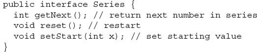
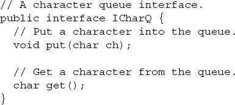
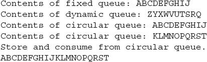

Chapter 8
Packages and Interfaces
Key Skills & Concepts
 Use packages
Use packages Understand how packages affect access
Apply the protected access modifier
Import packages
Know Java’s standard packages
Understand interface fundamentals
Implement an interface
Apply interface references
Understand interface variables
Extend interfaces
Create default and static interface methods
This chapter examines two of Java’s most innovative features: packages and interfaces. Packages are groups of related classes. Packages help organize your code and provide another layer of encapsulation. An interface defines a set of methods that will be implemented by a class. Thus, an interface gives you a way to specify what a class will do, but not how it will do it. Packages and interfaces give you greater control over the organization of your program.
Packages
In programming, it is often helpful to group related pieces of a program together. In Java, this is accomplished by using a package. A package serves two purposes. First, it provides a mechanism by which related pieces of a program can be organized as a unit. Classes defined within a package must be accessed through their package name. Thus, a package provides a way to name a collection of classes. Second, a package participates in Java’s access control mechanism. Classes defined within a package can be made private to that package and not accessible by code outside the package. Thus, the package provides a means by which classes can be encapsulated. Let’s examine each feature a bit more closely.
In general, when you name a class, you are allocating a name from the namespace. A namespace defines a declarative region. In Java, no two classes can use the same name from the same namespace. Thus, within a given namespace, each class name must be unique. The examples shown in the preceding chapters have all used the default (global) namespace. While this is fine for short sample programs, it becomes a problem as programs grow and the default namespace becomes crowded. In large programs, finding unique names for each class can be difficult. Furthermore, you must avoid name collisions with code created by other programmers working on the same project, and with Java’s library. The solution to these problems is the package because it gives you a way to partition the namespace. When a class is defined within a package, the name of that package is attached to each class, thus avoiding name collisions with other classes that have the same name, but are in other packages.
Since a package usually contains related classes, Java defines special access rights to code within a package. In a package, you can define code that is accessible by other code within the same package but not by code outside the package. This enables you to create self-contained groups of related classes that keep their operation private.
Defining a Package
All classes in Java belong to some package. When no package statement is specified, the default (global) package is used. Furthermore, the default package has no name, which makes the default package transparent. This is why you haven’t had to worry about packages before now. While the default package is fine for short, sample programs, it is inadequate for real applications. Most of the time, you will define one or more packages for your code.
To create a package, put a package command at the top of a Java source file. The classes declared within that file will then belong to the specified package. Since a package defines a namespace, the names of the classes that you put into the file become part of that package’s namespace.
This is the general form of the package statement:
package pkg;
Here, pkg is the name of the package. For example, the following statement creates a package called mypack:
Java uses the file system to manage packages, with each package stored in its own directory. For example, the .class files for any classes you declare to be part of mypack must be stored in a directory called mypack.
Like the rest of Java, package names are case sensitive. This means that the directory in which a package is stored must be precisely the same as the package name. If you have trouble trying the examples in this chapter, remember to check your package and directory names carefully. Lowercase is often used for package names.
More than one file can include the same package statement. The package statement simply specifies to which package the classes defined in a file belong. It does not exclude other classes in other files from being part of that same package. Most real-world packages are spread across many files.
You can create a hierarchy of packages. To do so, simply separate each package name from the one above it by use of a period. The general form of a multileveled package statement is shown here:
package pack1.pack2.pack3…packN;
Of course, you must create directories that support the package hierarchy that you create. For example,
must be stored in …/alpha/beta/gamma, where … specifies the path to the specified directories.
Finding Packages and CLASSPATH
As just explained, packages are mirrored by directories. This raises an important question: How does the Java run-time system know where to look for packages that you create? The answer has three parts. First, by default, the Java run-time system uses the current working directory as its starting point. Thus, if your package is in a subdirectory of the current directory, it will be found. Second, you can specify a directory path or paths by setting the CLASSPATH environmental variable. Third, you can use the -classpath option with java and javac to specify the path to your classes.
For example, assuming the following package specification:
In order for a program to find mypack, one of three things must be true: The program can be executed from a directory immediately above mypack, or CLASSPATH must be set to include the path to mypack, or the -classpath option must specify the path to mypack when the program is run via java.
The easiest way to try the examples shown in this book is to simply create the package directories below your current development directory, put the .class files into the appropriate directories, and then execute the programs from the development directory. This is the approach used by the following examples.
One last point: To avoid problems, it is best to keep all .java and .class files associated with a package in that package’s directory. Also, compile each file from the directory above the package directory.
A Short Package Example
Keeping the preceding discussion in mind, try this short package example. It creates a simple book database that is contained within a package called bookpack.
Call this file BookDemo.java and put it in a directory called bookpack.
Next, compile the file. You can do this by specifying
from the directory directly above bookpack. Then try executing the class, using the following command line:
Remember, you will need to be in the directory above bookpack when you execute this command. (Or, use one of the other two options described in the preceding section to specify the path to bookpack.)
As explained, BookDemo and Book are now part of the package bookpack. This means that BookDemo cannot be executed by itself. That is, you cannot use this command line:
Instead, BookDemo must be qualified with its package name.
Packages and Member Access
The preceding chapters have introduced the fundamentals of access control, including the private and public modifiers, but they have not told the entire story. The reason for this is that packages also participate in Java’s access control mechanism, and a complete discussion had to wait until packages were covered.
The visibility of an element is determined by its access specification—private, public, protected, or default—and the package in which it resides. Thus, the visibility of an element is determined by its visibility within a class and its visibility within a package. This multilayered approach to access control supports a rich assortment of access privileges. Table 8-1 summarizes the various access levels. Let’s examine each access option individually.
Table 8-1 Class Member Access
If a member of a class has no explicit access modifier, then it is visible within its package but not outside its package. Therefore, you will use the default access specification for elements that you want to keep private to a package but public within that package.
Members explicitly declared public are visible everywhere, including different classes and different packages. There is no restriction on their use or access. A private member is accessible only to the other members of its class. A private member is unaffected by its membership in a package. A member specified as protected is accessible within its package and to all subclasses, including subclasses in other packages.
Table 8-1 applies only to members of classes. A top-level class has only two possible access levels: default and public. When a class is declared as public, it is accessible by any other code. If a class has default access, it can be accessed only by other code within its same package. Also, a class that is declared public must reside in a file by the same name.
A Package Access Example
In the package example shown earlier, both Book and BookDemo were in the same package, so there was no problem with BookDemo using Book because the default access privilege grants all members of the same package access. However, if Book were in one package and BookDemo were in another, the situation would be different. In this case, access to Book would be denied. To make Book available to other packages, you must make three changes. First, Book needs to be declared public. This makes Book visible outside of bookpack. Second, its constructor must be made public, and finally, its show( ) method needs to be public. This allows them to be visible outside of bookpack, too. Thus, to make Book usable by other packages, it must be recoded as shown here:
To use Book from another package, either you must use the import statement described in the next section, or you must fully qualify its name to include its full package specification. For example, here is a class called UseBook, which is contained in the bookpackext package. It fully qualifies Book in order to use it.
Notice how every use of Book is preceded with the bookpack qualifier. Without this specification, Book would not be found when you tried to compile UseBook.
Understanding Protected Members
Newcomers to Java are sometimes confused by the meaning and use of protected. As explained, the protected modifier creates a member that is accessible within its package and to subclasses in other packages. Thus, a protected member is available for all subclasses to use but is still protected from arbitrary access by code outside its package.
To better understand the effects of protected, let’s work through an example. First, change the Book class so that its instance variables are protected, as shown here:
Next, create a subclass of Book, called ExtBook, and a class called ProtectDemo that uses ExtBook. ExtBook adds a field that stores the name of the publisher and several accessor methods. Both of these classes will be in their own package called bookpackext. They are shown here:
Look first at the code inside ExtBook. Because ExtBook extends Book, it has access to the protected members of Book, even though ExtBook is in a different package. Thus, it can access title, author, and pubDate directly, as it does in the accessor methods it creates for those variables. However, in ProtectDemo, access to these variables is denied because ProtectDemo is not a subclass of Book. For example, if you remove the comment symbol from the following line, the program will not compile.
Importing Packages
When you use a class from another package, you can fully qualify the name of the class with the name of its package, as the preceding examples have done. However, such an approach could easily become tiresome and awkward, especially if the classes you are qualifying are deeply nested in a package hierarchy. Since Java was invented by programmers for programmers—and programmers don’t like tedious constructs—it should come as no surprise that a more convenient method exists for using the contents of packages: the import statement. Using import you can bring one or more members of a package into view. This allows you to use those members directly, without explicit package qualification.
Ask the Expert
Q: I know that C++ also includes an access specifier called protected. Is it similar to Java’s?
A: Similar, but not the same. In C++, protected creates a member that can be accessed by subclasses but is otherwise private. In Java, protected creates a member that can be accessed by any code within its package but only by subclasses outside of its package. You need to be careful of this difference when porting code between C++ and Java.
Here is the general form of the import statement:
import pkg.classname;
Here, pkg is the name of the package, which can include its full path, and classname is the name of the class being imported. If you want to import the entire contents of a package, use an asterisk (*) for the class name. Here are examples of both forms:
In the first case, the MyClass class is imported from mypack. In the second, all of the classes in mypack are imported. In a Java source file, import statements occur immediately following the package statement (if it exists) and before any class definitions.
You can use import to bring the bookpack package into view so that the Book class can be used without qualification. To do so, simply add this import statement to the top of any file that uses Book.
For example, here is the UseBook class recoded to use import:
Notice that you no longer need to qualify Book with its package name.
Java’s Class Library Is Contained in Packages
As explained earlier in this book, Java defines a large number of standard classes that are available to all programs. This class library is often referred to as the Java API (Application Programming Interface). The Java API is stored in packages. At the top of the package hierarchy is java. Descending from java are several subpackages. Here are a few examples:
| Subpackage |
Description |
| java.lang |
Contains a large number of general-purpose classes |
| java.io |
Contains I/O classes |
| java.net |
Contains classes that support networking |
| java.applet |
Contains classes for creating applets |
| java.awt |
Contains classes that support the Abstract Window Toolkit |
Since the beginning of this book, you have been using java.lang. It contains, among several others, the System class, which you have been using when performing output using println( ). The java.lang package is unique because it is imported automatically into every Java program. This is why you did not have to import java.lang in the preceding sample programs. However, you must explicitly import the other packages. We will be examining several packages in subsequent chapters.
Interfaces
In object-oriented programming, it is sometimes helpful to define what a class must do but not how it will do it. You have already seen an example of this: the abstract method. An abstract method defines the signature for a method but provides no implementation. A subclass must provide its own implementation of each abstract method defined by its superclass. Thus, an abstract method specifies the interface to the method but not the implementation. While abstract classes and methods are useful, it is possible to take this concept a step further. In Java, you can fully separate a class’ interface from its implementation by using the keyword interface.
An interface is syntactically similar to an abstract class, in that you can specify one or more methods that have no body. Those methods must be implemented by a class in order for their actions to be defined. Thus, an interface specifies what must be done, but not how to do it. Once an interface is defined, any number of classes can implement it. Also, one class can implement any number of interfaces.
To implement an interface, a class must provide bodies (implementations) for the methods described by the interface. Each class is free to determine the details of its own implementation. Two classes might implement the same interface in different ways, but each class still supports the same set of methods. Thus, code that has knowledge of the interface can use objects of either class since the interface to those objects is the same. By providing the interface keyword, Java allows you to fully utilize the “one interface, multiple methods” aspect of polymorphism.
Before continuing an important point needs to be made. JDK 8 added a feature to interface that makes a significant change to its capabilities. Prior to JDK 8, an interface could not define any implementation whatsoever. Thus, prior to JDK 8, an interface could define only what, but not how, as just described. JDK 8 changes this. Today, it is possible to add a default implementation to an interface method. Thus, it is now possible for interface to specify some behavior. However, default methods constitute what is, in essence, a special-use feature, and the original intent behind interface still remains. Therefore, as a general rule, you will still often create and use interfaces in which no default methods exist. For this reason, we will begin by discussing the interface in its traditional form. The default method is described at the end of this chapter.
Here is a simplified general form of a traditional interface:
Here, access is either public or not used. When no access modifier is included, then default access results, and the interface is available only to other members of its package. When it is declared as public, the interface can be used by any other code. (When an interface is declared public, it must be in a file of the same name.) name is the name of the interface and can be any valid identifier.
In the traditional form of an interface, methods are declared using only their return type and signature. They are, essentially, abstract methods. Thus, each class that includes such an interface must implement all of its methods. In an interface, methods are implicitly public.
Variables declared in an interface are not instance variables. Instead, they are implicitly public, final, and static and must be initialized. Thus, they are essentially constants. Here is an example of an interface definition. It specifies the interface to a class that generates a series of numbers.

This interface is declared public so that it can be implemented by code in any package.
Implementing Interfaces
Once an interface has been defined, one or more classes can implement that interface. To implement an interface, include the implements clause in a class definition and then create the methods required by the interface. The general form of a class that includes the implements clause looks like this:
To implement more than one interface, the interfaces are separated with a comma. Of course, the extends clause is optional.
The methods that implement an interface must be declared public. Also, the type signature of the implementing method must match exactly the type signature specified in the interface definition.
Here is an example that implements the Series interface shown earlier. It creates a class called ByTwos, which generates a series of numbers, each two greater than the previous one.
Notice that the methods getNext( ), reset( ), and setStart( ) are declared using the public access specifier. This is necessary. Whenever you implement a method defined by an interface, it must be implemented as public because all members of an interface are implicitly public.
Here is a class that demonstrates ByTwos:
The output from this program is shown here:
It is both permissible and common for classes that implement interfaces to define additional members of their own. For example, the following version of ByTwos adds the method getPrevious( ), which returns the previous value:
Notice that the addition of getPrevious( ) required a change to the implementations of the methods defined by Series. However, since the interface to those methods stays the same, the change is seamless and does not break preexisting code. This is one of the advantages of interfaces.
As explained, any number of classes can implement an interface. For example, here is a class called ByThrees that generates a series that consists of multiples of three:
One more point: If a class includes an interface but does not fully implement the methods defined by that interface, then that class must be declared as abstract. No objects of such a class can be created, but it can be used as an abstract superclass, allowing subclasses to provide the complete implementation.
Using Interface References
You might be somewhat surprised to learn that you can declare a reference variable of an interface type. In other words, you can create an interface reference variable. Such a variable can refer to any object that implements its interface. When you call a method on an object through an interface reference, it is the version of the method implemented by the object that is executed. This process is similar to using a superclass reference to access a subclass object, as described in Chapter 7.
The following example illustrates this process. It uses the same interface reference variable to call methods on objects of both ByTwos and ByThrees.
In main( ), ob is declared to be a reference to a Series interface. This means that it can be used to store references to any object that implements Series. In this case, it is used to refer to twoOb and threeOb, which are objects of type ByTwos and ByThrees, respectively, which both implement Series. An interface reference variable has knowledge only of the methods declared by its interface declaration. Thus, ob could not be used to access any other variables or methods that might be supported by the object.
| Try This 8-1 |
Creating a Queue Interface |
To see the power of interfaces in action, we will look at a practical example. In earlier chapters, you developed a class called Queue that implemented a simple fixed-size queue for characters. However, there are many ways to implement a queue. For example, the queue can be of a fixed size or it can be “growable.” The queue can be linear, in which case it can be used up, or it can be circular, in which case elements can be put in as long as elements are being taken off. The queue can also be held in an array, a linked list, a binary tree, and so on. No matter how the queue is implemented, the interface to the queue remains the same, and the methods put( ) and get( ) define the interface to the queue independently of the details of the implementation. Because the interface to a queue is separate from its implementation, it is easy to define a queue interface, leaving it to each implementation to define the specifics.
In this project, you will create an interface for a character queue and three implementations. All three implementations will use an array to store the characters. One queue will be the fixed-size, linear queue developed earlier. Another will be a circular queue. In a circular queue, when the end of the underlying array is encountered, the get and put indices automatically loop back to the start. Thus, any number of items can be stored in a circular queue as long as items are also being taken out. The final implementation creates a dynamic queue, which grows as necessary when its size is exceeded.
1. Create a file called ICharQ.java and put into that file the following interface definition:

As you can see, this interface is very simple, consisting of only two methods. Each class that implements ICharQ will need to implement these methods.
2. Create a file called IQDemo.java.
3. Begin creating IQDemo.java by adding the FixedQueue class shown here:
This implementation of ICharQ is adapted from the Queue class shown in Chapter 5 and should already be familiar to you.
4. To IQDemo.java add the CircularQueue class shown here. It implements a circular queue for characters.
The circular queue works by reusing space in the array that is freed when elements are retrieved. Thus, it can store an unlimited number of elements as long as elements are also being removed. While conceptually simple—just reset the appropriate index to zero when the end of the array is reached—the boundary conditions are a bit confusing at first. In a circular queue, the queue is full not when the end of the underlying array is reached, but rather when storing an item would cause an unretrieved item to be overwritten. Thus, put( ) must check several conditions in order to determine if the queue is full. As the comments suggest, the queue is full when either putloc is one less than getloc, or if putloc is at the end of the array and getloc is at the beginning. As before, the queue is empty when getloc and putloc are equal. To make these checks easier, the underlying array is created one size larger than the queue size.
5. Put into IQDemo.java the DynQueue class shown next. It implements a “growable” queue that expands its size when space is exhausted.
In this queue implementation, when the queue is full, an attempt to store another element causes a new underlying array to be allocated that is twice as large as the original, the current contents of the queue are copied into this array, and a reference to the new array is stored in q.
6. To demonstrate the three ICharQ implementations, enter the following class into IQDemo.java. It uses an ICharQ reference to access all three queues.
7. The output from this program is shown here:

8. Here are some things to try on your own. Create a circular version of DynQueue. Add a reset( ) method to ICharQ, which resets the queue. Create a static method that copies the contents of one type of queue into another.
Variables in Interfaces
As mentioned, variables can be declared in an interface, but they are implicitly public, static, and final. At first glance, you might think that there would be very limited use for such variables, but the opposite is true. Large programs typically make use of several constant values that describe such things as array size, various limits, special values, and the like. Since a large program is typically held in a number of separate source files, there needs to be a convenient way to make these constants available to each file. In Java, interface variables offer one solution.
To define a set of shared constants, create an interface that contains only these constants, without any methods. Each file that needs access to the constants simply “implements” the interface. This brings the constants into view. Here is an example:
NOTE
The technique of using an interface to define shared constants is controversial. It is described here for completeness.
Interfaces Can Be Extended
One interface can inherit another by use of the keyword extends. The syntax is the same as for inheriting classes. When a class implements an interface that inherits another interface, it must provide implementations for all methods required by the interface inheritance chain. Following is an example:
As an experiment, you might try removing the implementation for meth1( ) in MyClass. This will cause a compile-time error. As stated earlier, any class that implements an interface must implement all methods required by that interface, including any that are inherited from other interfaces.
Default Interface Methods
As explained earlier, prior to JDK 8, an interface could not define any implementation whatsoever. This meant that for all previous versions of Java, the methods specified by an interface were abstract, containing no body. This is the traditional form of an interface and is the type of interface that the preceding discussions have used. The release of JDK 8 changed this by adding a new capability to interface called the default method. A default method lets you define a default implementation for an interface method. In other words, by use of a default method, it is now possible for an interface method to provide a body, rather than being abstract. During its development, the default method was also referred to as an extension method, and you will likely see both terms used.
A primary motivation for the default method was to provide a means by which interfaces could be expanded without breaking existing code. Recall that there must be implementations for all methods defined by an interface. In the past, if a new method were added to a popular, widely used interface, then the addition of that method would break existing code because no implementation would be found for that method. The default method solves this problem by supplying an implementation that will be used if no other implementation is explicitly provided. Thus, the addition of a default method will not cause preexisting code to break.
Another motivation for the default method was the desire to specify methods in an interface that are, essentially, optional, depending on how the interface is used. For example, an interface might define a group of methods that act on a sequence of elements. One of these methods might be called remove( ), and its purpose is to remove an element from the sequence. However, if the interface is intended to support both modifiable and non-modifiable sequences, then remove( ) is essentially optional because it won’t be used by non-modifiable sequences. In the past, a class that implemented a non-modifiable sequence would have had to define an empty implementation of remove( ), even though it was not needed. Today, a default implementation for remove( ) can be specified in the interface that either does nothing or reports an error. Providing this default prevents a class used for non-modifiable sequences from having to define its own, placeholder version of remove( ). Thus, by providing a default, the interface makes the implementation of remove( ) by a class optional.
It is important to point out that the addition of default methods does not change a key aspect of interface: an interface still cannot have instance variables. Thus, the defining difference between an interface and a class is that a class can maintain state information, but an interface cannot. Furthermore, it is still not possible to create an instance of an interface by itself. It must be implemented by a class. Therefore, even though, beginning with JDK 8, an interface can define default methods, the interface must still be implemented by a class if an instance is to be created.
One last point: As a general rule, default methods constitute a special-purpose feature. Interfaces that you create will still be used primarily to specify what and not how. However, the inclusion of the default method gives you added flexibility.
Default Method Fundamentals
An interface default method is defined similar to the way a method is defined by a class. The primary difference is that the declaration is preceded by the keyword default. For example, consider this simple interface:
MyIF declares two methods. The first, getUserID( ), is a standard interface method declaration. It defines no implementation whatsoever. The second method is getAdminID( ), and it does include a default implementation. In this case, it simply returns 1. Pay special attention to the way getAdminID( ) is declared. Its declaration is preceded by the default modifier. This syntax can be generalized. To define a default method, precede its declaration with default.
Because getAdminID( ) includes a default implementation, it is not necessary for an implementing class to override it. In other words, if an implementing class does not provide its own implementation, the default is used. For example, the MyIFImp class shown next is perfectly valid:
The following code creates an instance of MyIFImp and uses it to call both getUserID( ) and getAdminID( ).
The output is shown here:
As you can see, the default implementation of getAdminID( ) was automatically used. It was not necessary for MyIFImp to define it. Thus, for getAdminID( ), implementation by a class is optional. (Of course, its implementation by a class will be required if the class needs to return a different ID.)
It is both possible and common for an implementing class to define its own implementation of a default method. For example, MyIFImp2 overrides getAdminID( ), as shown here:
Now, when getAdminID( ) is called, a value other than its default is returned.
A More Practical Example of a Default Method
Although the preceding shows the mechanics of using default methods, it doesn’t illustrate their usefulness in a more practical setting. To do this, let’s return to the Series interface shown earlier in this chapter. For the sake of discussion, assume that Series is widely used and many programs rely on it. Further assume that through an analysis of usage patterns, it was discovered that many implementations of Series were adding a method that returned an array that contained the next n elements in the series. Given this situation, you decide to enhance Series so that it includes such a method, calling the new method getNextArray( ) and declaring it as shown here:
Here, n specifies the number of elements to retrieve. Prior to default methods, adding this method to Series would have broken preexisting code because existing implementations would not have defined the method. However, by providing a default for this new method, it can be added to Series without causing harm. Let’s work through the process.
In some cases, when a default method is added to an existing interface, its implementation simply reports an error if an attempt is made to use the default. This approach is necessary in the case of default methods for which no implementation can be provided that will work in all cases. These types of default methods define what is, essentially, optional code. However, in some cases, you can define a default method that will work in all cases. This is the situation for getNextArray( ). Because Series already requires that a class implement getNext( ), the default version of getNextArray( ) can use it. Thus, here is one way to implement the new version of Series that includes the default getNextArray( ) method:
Pay special attention to the way that the default method getNextArray( ) is implemented. Because getNext( ) was part of the original specification for Series, any class that implements Series will provide that method. Thus, it can be used inside getNextArray( ) to obtain the next n elements in the series. As a result, any class that implements the enhanced version of Series will be able to use getNextArray( ) as is, and no class is required to override it. Therefore, no preexisting code is broken. Of course, it is still possible for a class to provide its own implementation of getNextArray( ), if you choose.
As the preceding example shows, the default method provides two major benefits:
It gives you a way to gracefully evolve interfaces over time without breaking existing code.
It provides optional functionality without requiring that a class provide a placeholder implementation when that functionality is not needed.
In the case of getNextArray( ), the second point is especially important. If an implementation of Series does not require the capability offered by getNextArray( ), it need not provide its own placeholder implementation. This allows cleaner code to be created.
Multiple Inheritance Issues
As explained earlier in this book, Java does not support the multiple inheritance of classes. Now that an interface can include default methods, you might be wondering if an interface can provide a way around this restriction. The answer is, essentially, no. Recall that there is still a key difference between a class and an interface: a class can maintain state information (through the use of instance variables), but an interface cannot.
The preceding notwithstanding, default methods do offer a bit of what one would normally associate with the concept of multiple inheritance. For example, you might have a class that implements two interfaces. If each of these interfaces provides default methods, then some behavior is inherited from both. Thus, to a limited extent, default methods do support multiple inheritance of behavior. As you might guess, in such a situation, it is possible that a name conflict will occur.
For example, assume that two interfaces called Alpha and Beta are implemented by a class called MyClass. What happens if both Alpha and Beta provide a method called reset( ) for which both declare a default implementation? Is the version by Alpha or the version by Beta used by MyClass? Or, consider a situation in which Beta extends Alpha. Which version of the default method is used? Or, what if MyClass provides its own implementation of the method? To handle these and other similar types of situations, Java defines a set of rules that resolve such conflicts.
First, in all cases a class implementation takes priority over an interface default implementation. Thus, if MyClass provides an override of the reset( ) default method, MyClass’s version is used. This is the case even if MyClass implements both Alpha and Beta. In this case, both defaults are overridden by MyClass’s implementation.
Second, in cases in which a class inherits two interfaces that both have the same default method, if the class does not override that method, then an error will result. Continuing with the example, if MyClass inherits both Alpha and Beta, but does not override reset( ), then an error will occur.
In cases in which one interface inherits another, with both defining a common default method, the inheriting interface’s version of the method takes precedence. Therefore, continuing the example, if Beta extends Alpha, then Beta’s version of reset( ) will be used.
It is possible to refer explicitly to a default implementation by using a new form of super. Its general form is shown here:
InterfaceName.super.methodName( )
For example, if Beta wants to refer to Alpha’s default for reset( ), it can use this statement:
Use static Methods in an Interface
JDK 8 added another new capability to interface: the ability to define one or more static methods. Like static methods in a class, a static method defined by an interface can be called independently of any object. Thus, no implementation of the interface is necessary, and no instance of the interface is required in order to call a static method. Instead, a static method is called by specifying the interface name, followed by a period, followed by the method name. Here is the general form:
InterfaceName.staticMethodName
Notice that this is similar to the way that a static method in a class is called.
The following shows an example of a static method in an interface by adding one to MyIF, shown earlier. The static method is getUniversalID( ). It returns zero.
The getUniversalID( ) method can be called, as shown here:
As mentioned, no implementation or instance of MyIF is required to call getUniversalID( ) because it is static.
One last point: static interface methods are not inherited by either an implementing class or a subinterface.
Final Thoughts on Packages and Interfaces
Although the examples we’ve included in this book do not make frequent use of packages or interfaces, both of these tools are an important part of the Java programming environment. Virtually all real programs that you write in Java will be contained within packages. A number will probably implement interfaces as well. It is important, therefore, that you be comfortable with their usage.
 Chapter 8 Self Test
Chapter 8 Self Test
1. Using the code from Try This 8-1, put the ICharQ interface and its three implementations into a package called qpack. Keeping the queue demonstration class IQDemo in the default package, show how to import and use the classes in qpack.
2. What is a namespace? Why is it important that Java allows you to partition the namespace?
3. Packages are stored in ______________.
4. Explain the difference between protected and default access.
5. Explain the two ways that the members of a package can be used by other packages.
6. “One interface, multiple methods” is a key tenet of Java. What feature best exemplifies it?
7. How many classes can implement an interface? How many interfaces can a class implement?
8. Can interfaces be extended?
9. Create an interface for the Vehicle class from Chapter 7. Call the interface IVehicle.
10. Variables declared in an interface are implicitly static and final. Can they be shared with other parts of a program?
11. A package is, in essence, a container for classes. True or False?
12. What standard Java package is automatically imported into a program?
13. What keyword is used to declare a default interface method?
14. Beginning with JDK 8, is it possible to define a static method in an interface?
15. Assume that the ICharQ interface shown in Try This 8-1 has been in widespread use for several years. Now, you want to add a method to it called reset( ), which will be used to reset the queue to its empty, starting condition. Assuming JDK 8 or later, how can this be accomplished without breaking preexisting code?
16. How is a static method in an interface called?